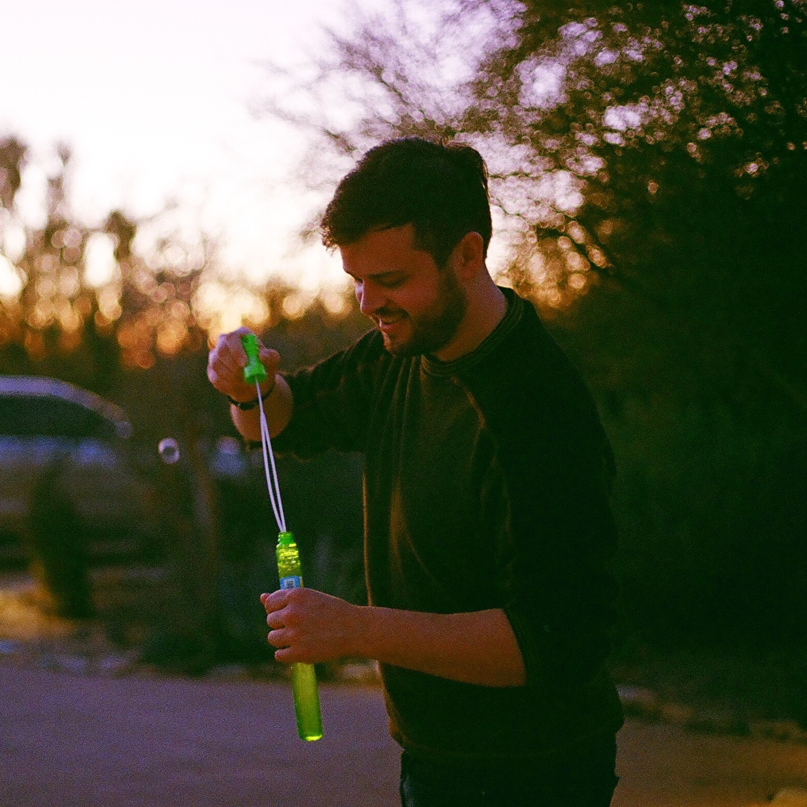

Assistant Professor
Sibley School of Mechanical
and Aerospace Engineering
Cornell University
graduate field memberships
·Mechanical Engineering
·Aerospace Engineering
·Theoretical and Applied Mechanics
·Applied Mathematics
Bio
My research sits at the intersection of robotics, control theory, differential geometry, and design. I am broadly interested in how mathematical structure — symmetry, hierarchy, and mechanics — can be harnessed to create more capable algorithms for robot control, and how the interplay between control and morphology mediates overall robot capabilities.
At Cornell, I lead the Geometry, Design, and Control Laboratory — the "GeoDesiC Lab". In both our algorithmic work and our design of prototype systems, we seek to bring robots ever closer to the incredible example set by Nature, and to gain deeper understanding for the benefit of all.
Previously, I spent a decade at the University of Pennsylvania — working in the GRASP Laboratory — where I earned my PhD in Mechanical Engineering and Applied Mechanics in 2025.